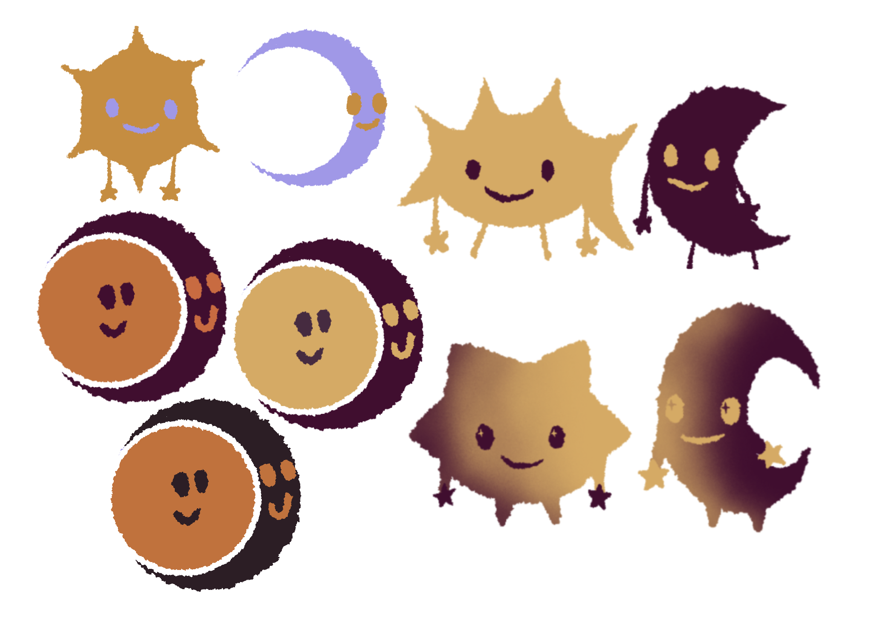

Animations- und Illustrationsserie
„Sonne und Mond“ ist ein persönliches Herzensprojekt, das die Harmonie und das gegenseitige Ergänzen zweier Charaktere visualisiert.
Im Zuge dessen habe ich niedliche, bilderbuchartige Figuren erschaffen.
Weitere Illustrationen und Animationen teile ich auf meinem
Instagram-Profil.
Animation & Details
Animations-Loop
Ein interaktiver 15-sekündiger Einblick in die Dynamik zwischen
Sonne und Mond.


„Sonne und Mond“ ist inspiriert von einer besonderen Person in meinem Leben. Wir sehen uns, wie die Charaktere, gegenseitig als unterschiedliche aber letztendlich harmonische Ergänzung.
Eine große Leidenschaft von mir liegt im Illustrieren und Erschaffen von Charakteren, besonders solche mit niedlicher Ästhetik. Die Figuren sollen hier keine komplexen Geschichten erzählen, sondern beim Betrachtenden ein Gefühl von Wärme hervorrufen.
Um diese ruhige Stimmung visuell zu unterstreichen, habe ich mich im Designprozess auf einen minimalistischen Stil konzentriert. Die gesamte Welt basiert auf einer Palette aus nur zwei Farben: Einem tiefen Lila und einem warmen Gelb. Gearbeitet habe ich mit zwei Strukturpinseln, einer für die Umrisse und Formen und einer für das Shading. Diese feine Textur verleiht den Charakteren eine greifbare und interessante Tiefe.
Meine eigenen fertigen Illustrationen und Animationen zu sehen hat meine Begeisterung für visuelles Storytelling gefestigt.
Für mich ist dieses Projekt erst der Anfang: Ich möchte in Zukunft dieses und weitere Illustrationsprojekte dieser Art fortführen, wobei ein großer kreativer Traum von mir die Gestaltung eines eigenen Bilderbuchs ist.
